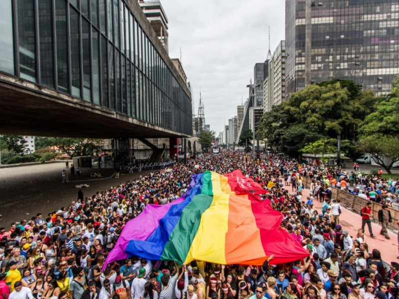

Parada lgbt+ enfrenta crises ao perder patrocínios e está ameaçada de deixar as ruas de São Paulo.

Foto: O Povo
Parada lgbt+ enfrenta crises ao perder patrocínios e está ameaçada de deixar as ruas de São Paulo.
Em sua 30ª edição, a Parada do Orgulho LBGT+ perde em torno de 60% de seus patrocinadores.
A Parada do Orgulho LBGT+, que aconteceu no dia 07 de junho de 2026, enfrenta vários desafios em sua 30ª edição. A Câmara Municipal aprovou o projeto de lei que proíbe a presença de crianças e adolescentes em eventos que façam alusão às práticas LBGTQIA+, mesmo que acompanhados de seus pais e/ou responsáveis, sujeitando organizadores que permitam a entrada de menores a multas de R$100 mil a R$1 milhão. O projeto de lei n°50/2025 também impede a ocupação e interdição das vias públicas para a realização desses eventos, determinando que ocorram somente em espaços fechados, sob pena de multa (entre R$100 mil à R$1 milhão).
O movimento está enfrentando uma crise financeira histórica com a perca de 60% do seu patrocínio. Onde antes eram arrecadados cerca de R$5 milhões, agora estimasse que foi arrecadado R$2 milhões. Além de ter que se adaptar a novos espaços, os participantes e organizadores do evento também sofrem com a perda de patrocinadores grandes como Burguer King, Mercado Livre, Vivo, Sephora, Smirnoff, Terra e Jean Paul Gautier. Apenas marcas como L'Oréal e Amstel mantiveram suas cotas principais.
Conforme a Associação da parada do orgulho LGBT de São Paulo (APOLBGT-SP) e alguns analistas, o esvaziamento ocorre pelos fatores:
Medo de punições financeiras: O projeto de lei não pune apenas os organizadores, mas também as marcas que o patrocinaram, e nenhuma marca quer o seu nome associado em processos jurídicos;
Fuga de polêmicas políticas: Marcas perceberam que se patrocinassem eventos dessa forma, receberiam críticas de conservadores e boicote nas redes sociais:
Classificação indicativa: Com o projeto de lei que proíbe crianças e adolescentes nos eventos, marcas de produtos gerais temem ser acusadas de promoverem conteúdos proibido para menores.
A comunidade acusa a prática do "pink money" (oportunismo comercial) - surfando na causa LGBT+, somente quando é lucrativo e benéfico, mas abandonam o apoio diante de pressão política.
Com tantos desafios a serem enfrentados, o Festival do Orgulho leva um tema político para as ruas esse ano. A organização do evento escolheu o tema "A rua convoca, a urna confirma". Para a Drag Queen Tiffany, de 41 anos e participante o evento desde os 18, a Parada não é apenas diversão, mas também é uma forma de fazer política.
Mesmo com diversos problemas, o evento contou com a presença confirmada de grandes nomes e mais de 130 atrações distribuidas em 14 trios elétricos:
Atrações principais: Pabllo Vitar, Gloria Groove, Pepita, Diego Martins, Grag Queen, Urias, Melody e Silvetty Montilla.
A participação no evento é gratuita. Para quem prefere ver de casa, a transmissão oficial será feita das 12h às 18h pela plataforma DiaTV, sob o comando do canal Diva Depressão e Lorelay Fox.
Feito por: @v9xgury